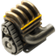

FLE 0.3.0: Agents autonomously building factories
FLE 0.3.0: Agents autonomously building factories
The 0.3.0 release of the Factorio Learning Environment (FLE) marks a major step forward in our effort to build a robust, extensible benchmark for agents. Since the original FLE paper, where we demonstrated that frontier models struggle with spatial reasoning, constrained environments, and recovery; and the 0.2.0 release, which introduced multi-agency, backtracking agents, and vision, we have worked hard over summer to bring 0.3.0.
We bridged Claude Code into Factorio via FLE and are keeping it as a pet.
You no longer need a running Factorio game client in order to run FLE. This offers portability and massive scaling potential across clusters and cloud environments, reducing barriers to entry and making FLE accessible at scale.
We implemented a headless game renderer from scratch, to provide realistic pixel observations for visual agents without needing the official client, to facilitate multimodal research in headless settings.
A CLI makes running the environment as simple as 1-line. Simplifies orchestration of large-scale sweeps and multi-job pipelines.
We adopted the OAI gym framework for cleaner observation and action spaces that are more compatible with community projects.
Cleaned-up codebase and easier developer onboarding with uv-based installation.
API key management, Weights & Biases logging, and early stopping for large-scale experiments.
Ensures reproducible deployments and smooth operation in both research and production settings. Compatible with Windows, MacOSX and Debian Linux.
This table shows the complexity of each entity in the lab play environment, measured by the number of prerequisite technology nodes required to unlock it. Understanding this complexity helps in designing progressive learning curricula for AI agents.
24
Total Entities
1-26
Complexity Range
8.8
Average Complexity
| Entity | Required Tech Nodes | Complexity Level |
|---|---|---|
| Iron Ore | 1 | Basic Resource |
| Crude Oil | 1 | Basic Resource |
| Iron Plate | 2 | Basic Resource |
| Petroleum Gas | 2 | Basic Resource |
| Iron Gear Wheel | 3 | Basic Component |
| Steel Plate | 3 | Early Tech |
| Stone Wall | 3 | Early Tech |
| Sulfur | 4 | Mid Tech |
| Plastic Bar | 4 | Mid Tech |
| Electronic Circuit | 6 | Mid Tech |
| Automation Science Pack | 6 | Mid Tech |
|  Engine Unit | 6 | Mid Tech |
| Piercing Round | 7 | Mid Tech |
| Sulfuric Acid | 7 | Mid Tech |
| Inserter | 8 | Mid Tech |
| Battery | 10 | Advanced Tech |
| Logistics Science Pack | 10 | Advanced Tech |
| Low Density Structure | 10 | Advanced Tech |
| Advanced Circuit | 11 | Advanced Tech |
| Military Science Pack | 13 | Advanced Tech |
| Processing Unit | 15 | Advanced Tech |
| Chemical Science Pack | 18 | Advanced Tech |
| Production Science Pack | 19 | Advanced Tech |
| Utility Science Pack | 26 | Elite Tech |
We used the standard agent that shipped in 0.2.0, without backtracking, to ensure comparability with prior results. Note: Using a backtracking agent would have improved performance but would make results incomparable to previous versions.
We tested 4 frontier and 3 open source models:
Each model was given an inventory of useful items and 64 steps to achieve production throughput targets of 16x per minute for solid items and 250x per minute for fluids.
Spatial reasoning is the biggest challenge for the base models. Models don't pick up enough things off the map when they're misplaced. This causes cascading errors and exacerbates issues with spatial reasoning.
Models don't define their own functions and classes - instead relying on the out-of-the box tools that are part of core FLE.
Models reward-hack to avoid full automation - despite being told to strive for full automation, continued progress towards the production targets reinforces the model reliance on 'shuttling' resources around which is easier than building functional logistics chains.
Agents use craft_item liberally to create intermediate goods instead of assembly machines when the target item has a lot of dependencies (see Claude's partial success on production science pack). craft_item is run in fast mode so it has no real cost.
We tested with a basic agent harness to assess the models themselves. In our previous release we implemented a backtracking agent which achieved better results due to having a cleaned context. We encourage the community to create agent harnesses which improve upon the baseline model performance.
Common error patterns by category:
Model performance across tasks sorted by tech tree complexity. This visualization shows how model success correlates with the number of prerequisite technology nodes required.